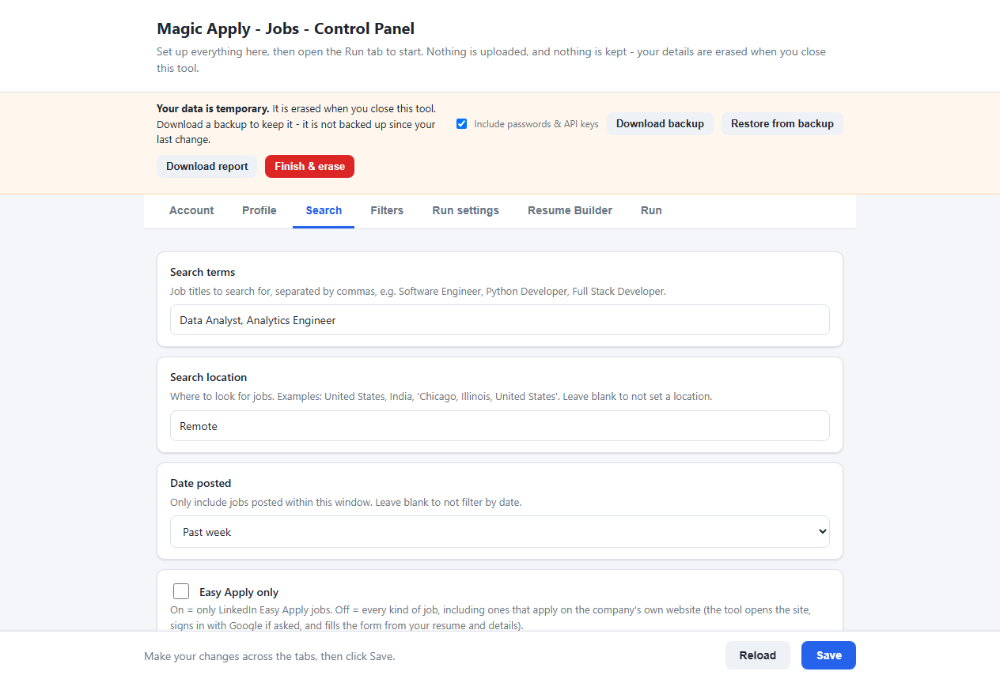
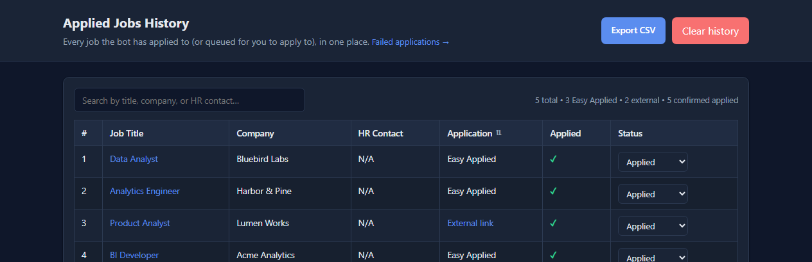

LinkedIn Easy Apply, automated
Searches your job titles and filters, applies with Easy Apply, records every job, and keeps to a daily cap you set.
Free and open source · runs on your own computer
Magic Apply - Jobs finds roles that match your search, applies with LinkedIn Easy Apply, and for every other job opens the employer’s application page, signs in with Google when asked and fills in the form from your details. It runs on your own PC and forgets everything when you close it.
Beta · one portable .exe, no installer · needs Google Chrome

Most jobs on LinkedIn are not Easy Apply. They send you to the employer’s own site, and that is where most auto-apply tools stop. This one carries on. See how it works, and read the risks first.
Searches your job titles and filters, applies with Easy Apply, records every job, and keeps to a daily cap you set.
For jobs that are not Easy Apply it follows the link to the employer’s own site, uploads your resume so the site’s autofill can run, then fills only the fields that are still empty and clicks through the pages.
Clicks “Continue with Google” and picks your account. It never types your Google password, and hands CAPTCHAs and 2-step verification to you.
Never submits with a required question empty, never invents an answer, leaves marketing opt-ins unticked, and only says you are authorised to work in your own country.
Turn on OpenAI, Gemini or DeepSeek to answer the odd question from your details. It is off by default; when it is on, the question text goes to the provider you choose.
Your settings, login and history live in a private folder only while the tool is open, and are erased when you close it. Download a backup to restore them next time.
Anything the tool could not finish is saved with the reason, the company’s link and a screenshot, so you can finish it by hand instead of guessing.
LinkedIn limits Easy Apply submissions each day. When it shows its limit message, the tool carries on with jobs that apply on company sites. About the limit.
You set everything up in your web browser and run the tool with a button. There are no code files to edit and no terminal commands to learn.
Open the control panel and enter your details, search terms and resume, or restore the backup file you saved last time.
A Chrome window opens on your own computer and the tool starts searching LinkedIn with your own account.
Easy Apply jobs are applied for directly. For other jobs it opens the company’s page, signs in with Google if the site asks, and fills in the form.
Anything it could not complete goes to the Failed jobs list with the reason and a link. When you are done, download a backup and click Finish & erase.
Filling in a stranger’s application form is not something to do carelessly, so the tool follows strict rules.
Job applications are personal. This tool is built so that sharing it, or sharing a PC, never shares what someone typed into it.
These are real screenshots of the control panel. The person, companies and jobs shown are made up.



Pick the way that suits you. All of them give you the same control panel.
Download MagicApply.exe, double-click it, and the control panel opens in your browser. No Python and no installer; it only needs Google Chrome.
Windows may warn that the file is unrecognised because it is not code-signed. Click More info, then Run anyway, and compare its SHA-256 with the one on the release page.
Download the .exeDownload the project as a ZIP, unzip it and double-click start.bat on Windows, start.command on macOS or start.sh on Linux. On Windows it installs Python and Chrome if they are missing.
The macOS and Linux launchers are included but less tested than the Windows ones.
Download the ZIPClone the repository, install the packages and start the control panel.
git clone https://github.com/sideeffects69/Magic-Apply-Jobs.git
cd Magic-Apply-Jobs
pip install -r requirements.txt
python app.pyThe questions people search for most, answered plainly, including the risks.
Set up a free, open-source LinkedIn auto apply tool in minutes: download it, fill in your profile, pick your search and click Start. No coding needed.
What people report about LinkedIn's daily Easy Apply limit, what happens when you reach it, and how to keep going by applying on company sites.
LinkedIn's rules ban tools that automate activity on its site. Here is the real risk to your account, what raises it, and how to keep your use modest.
Most LinkedIn jobs send you to the employer's own site. See how Magic Apply - Jobs opens it, signs in with Google and fills the form, and where it stops.
Compare the kinds of LinkedIn auto apply tools: subscription services, browser extensions and free open-source programs, with honest trade-offs for each.
Answers about Magic Apply - Jobs: cost, LinkedIn account safety, daily limits, company websites, your data, AI answers, setup and reporting problems.
Yes. It is free and open source under the MIT License, with no account, subscription or paid tier. You can read, change and share the code.
It handles ordinary application forms, including multi-page flows and forms inside iframes. Some sites will always need you: those that force an email-and-password account with no Google option, CAPTCHAs, and heavily custom questions. Anything it cannot finish is saved to a Failed jobs list with the reason and the company's link. So far it has been tested against realistic local mock sites, not every employer, so treat it as a beta and watch the first few runs.
LinkedIn has rules about automated activity, and it may limit or restrict accounts that break them. You use the tool at your own risk. Keep the daily cap low, watch your first runs and read the disclaimer before you start.
No. It runs on your own computer, keeps your details in a private folder only while it is open, and erases them when you close it. If you turn on the optional AI answers, the question, the job description and the about-me text you wrote are sent to the AI provider you choose. Otherwise nothing leaves your computer except the applications themselves.
No. It never types a Google password and never gets past a CAPTCHA or 2-step verification. When Google or a site asks for one, the tool waits while you finish that screen in the browser window, then carries on.
Google Chrome. The Windows .exe needs nothing else. On Windows the start.bat launcher also installs Python and Chrome if they are missing. On macOS and Linux, install Python 3.10 or newer and Chrome first, then double-click the launcher; those two launchers are included but less tested than the Windows ones.
The .exe is not code-signed, so Windows SmartScreen shows a warning the first time. Click More info, then Run anyway. You can compare the file's SHA-256 with the one on the release page, or build the exe yourself from the source with build_exe.bat. Some antivirus programs flag anything that drives a browser.
Click Download report in the control panel before you close it. It saves a text file with your recent log and why jobs failed, with your name, email, phone, passwords and links masked. Read it, then attach it to an issue on GitHub.
More answers on the full FAQ page.